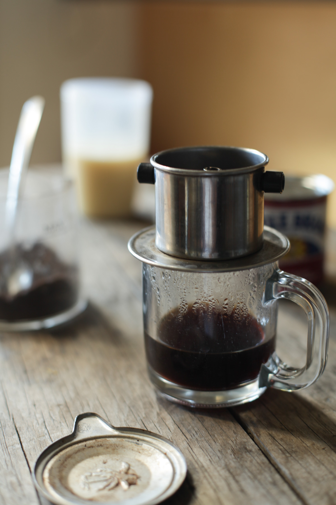
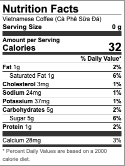

Home Page
The Strongest Iced Coffee, Cafe Sua Da

Intense, Sweet and Strong, The Vietnamese Iced Coffee can be trusted to Power you through out the day
Vietnamese coffee is an intensely strong and sweet coffee, that's sure to dissolve your morning daze and perk you up for the day. Its dark roast coffee and potent condensed milk, slowly dripped through a metal filter (phin) make this a unique coffee
In Vietnam, coffee, whether it's brewed and served at home or in restaurants, is brewed leisurely (i.e. less intense than how I typically brew pour over coffee). Hot coffee (cafe nong) is preferred in the morning, while iced coffee (cà phê sữa đá) is saved for the heat later in the day.
How to make Vietnamese Coffee
To brew Vietnamese coffee you need French roast coffee grounds, water, condensed milk, and a phin (a Vietnamese coffee filter). Boil the water and preheat the filter and cup by adding some water through. Remove excess water, then add a heaping tablespoon of coffee into the filter. Twist the filter on top until there is some resistance and pour some water inside and wait for the grounds to expand before filling the filter all the way up. Brew for three to five minutes, then add the desired amount of condensed milk into the cup.
Ingrediants
- 4 tsp Trung Nguyen Coffee
- 2 tsp condensed milk
- 1 cup boiling water
Instructions
- Start by boiling some water. An electric kettle makes it a lot faster. My tea-loving roommate left it behind when she went back to Australia. I would have never thought to purchase one, but it's seriously a game changer in terms of speed.
- Preheat the filter and cup by pouring a bit of boiling water through it.
- Remove the metal filter and pour in 1 heaping tablespoon of Trung Nguyen (about 4 teaspoons). I love the smell of coffee!
- Twist the filter on gently until it just starts to stop. Then turn it little more, a bit less than 1/8 a turn. If your filter doesn't use screws, simply place the filter on top of the coffee.
- Pour a tiny bit of water in the filter just to wet the grind and to let the grind expand a bit. This will help rid of some small grinds that happen to make it through the filter. You can toss it out if you see any.
- Fill the filter all the way and let it drip. Ideal brewing time comes to about 3 to 5 minutes so adjust the filter accordingly. Too loose and you’ll just have runny brown water. Too tight and nothing will drip through. The filter will be hot, so use a fork or another utensil to adjust the filter. Place the cap on and watch the coffee drip!
- For condensed milk, I prefer Longevity Brand Sua Ong Tho. Any brand will do but I like the art on this one 🙂. Personally, I like it a little strong and less sweet than most folks. About 1 teaspoon of condensed milk does it for me. If you like it sweeter add 2-3 tsp.
- For iced coffee, let it cool off a bit then pour the brew into a glass filled with ice
Nutrional Facts
